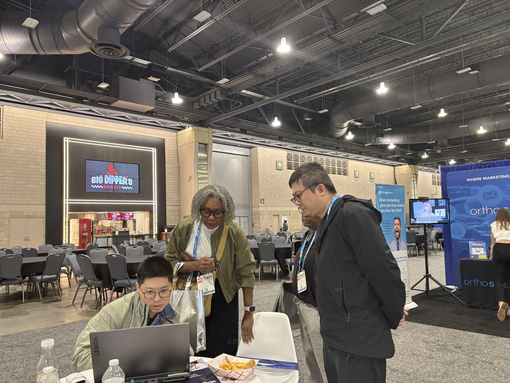
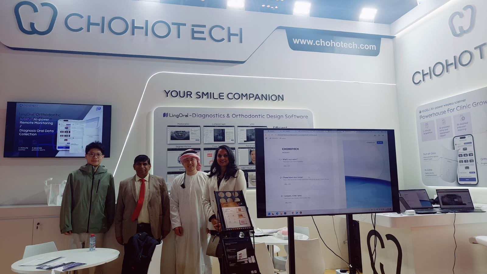
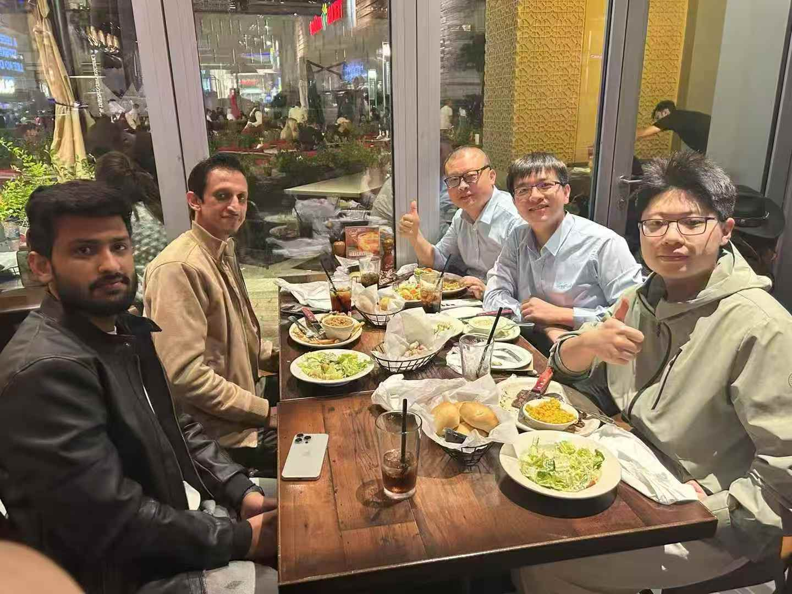
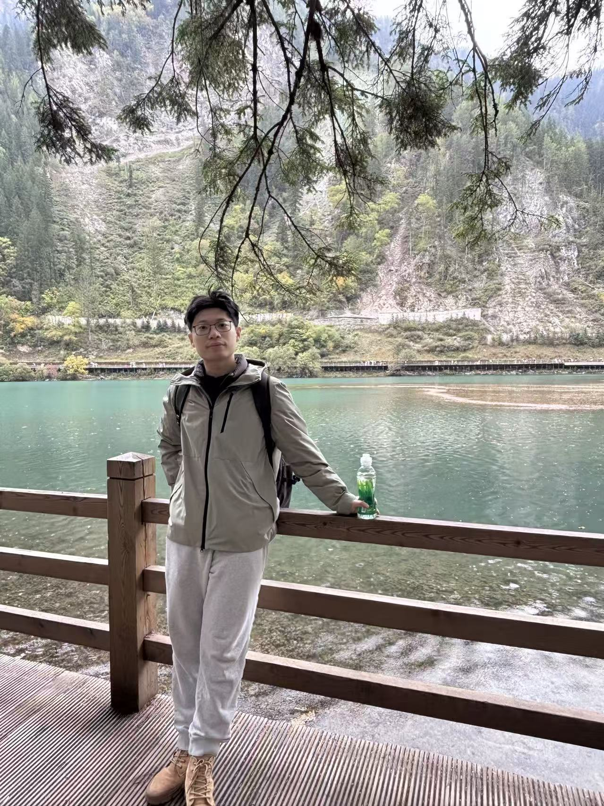

谢菲尔德大学
硕士信息管理与信息系统
我在杭州朝厚信息科技有限公司担任产品经理，主导 LingAgent 从 0 到 1。把医生的自然语言输入转成结构化需求、可对比的方案与可执行的 3D 编辑动作。通过 MCP 定义工具接口、上下文和方案状态读取方式。
通过 8 位专业医生的深度访谈建立需求模型，累计输出 30+ 份竞品分析报告。功能上线后，用埋点和行为漏斗定位交互问题，结合 A/B 测试持续迭代。也把专家经验转成可核对的规则，用盲测与三级可用性标准验证交付质量。
有一年半 Web 前端开发经历，熟悉 Vue、Unity 3D、Three.js。能与算法和研发团队对齐接口、数据格式与验收标准，并用 Cursor、Claude Code、Codex 独立验证从界面原型到 Agent 的 MVP。
作为产品代表参加迪拜 AEEDC、美国 AAO 等展会，独立负责全线产品的英文宣讲与客户答疑，累计接触潜在客户 50+ 家。

围绕产品流程和使用问题，与海外客户面对面交流。

在展台介绍产品，与海外客户建立联系。

与海外客户和团队相聚，让现场沟通自然延续。
* 图示参考公开产品资料重新绘制，为概念示意。
从“做了什么”，到“如何思考”。
需求定义、规则建模与团队协作，业务范围 → 团队投入 → 结构诊断 → 优化机制
PDF 支持逐页在线阅读与原文件下载；脑图提供可展开的网页视图与 XMind 源文件。

信息管理与信息系统
电子商务及法律
工作之外，我喜欢旅游、足球和桌游。去不同的地方看看，投入一场有悬念的比赛，或和朋友围坐在桌前，都是我享受生活的方式。
旅行带来新的见闻，足球带来热情，桌游则让相聚多一些策略与互动。如果你也有同样的兴趣，很乐意交换旅行见闻、聊场球，或一起开一局。
喜欢走出熟悉的环境，看看不同地方的风景与日常。在行程之外，也给偶然的发现留一点空间。
喜欢比赛的节奏、团队之间的配合，以及不到最后一刻仍有可能改变的结果。也愿意和同样热爱足球的人聊聊场上的选择。
享受围桌而坐的氛围，也喜欢理解规则、讨论策略和朋友互动的过程。一局游戏，就是一段专注又轻松的相处时光。
大模型应用 / Agent 产品 / 评测与迭代
19557106057（微信同号） · 现居杭州